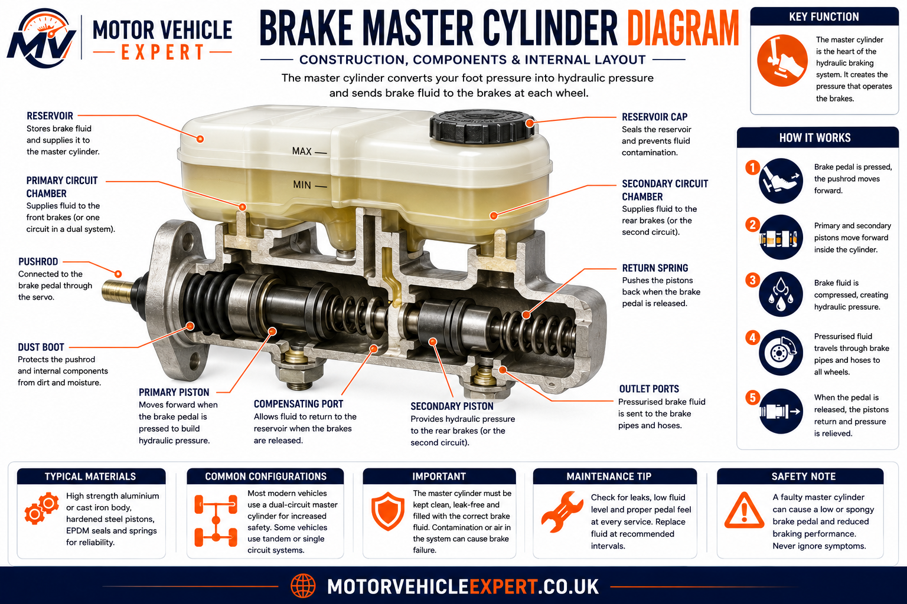
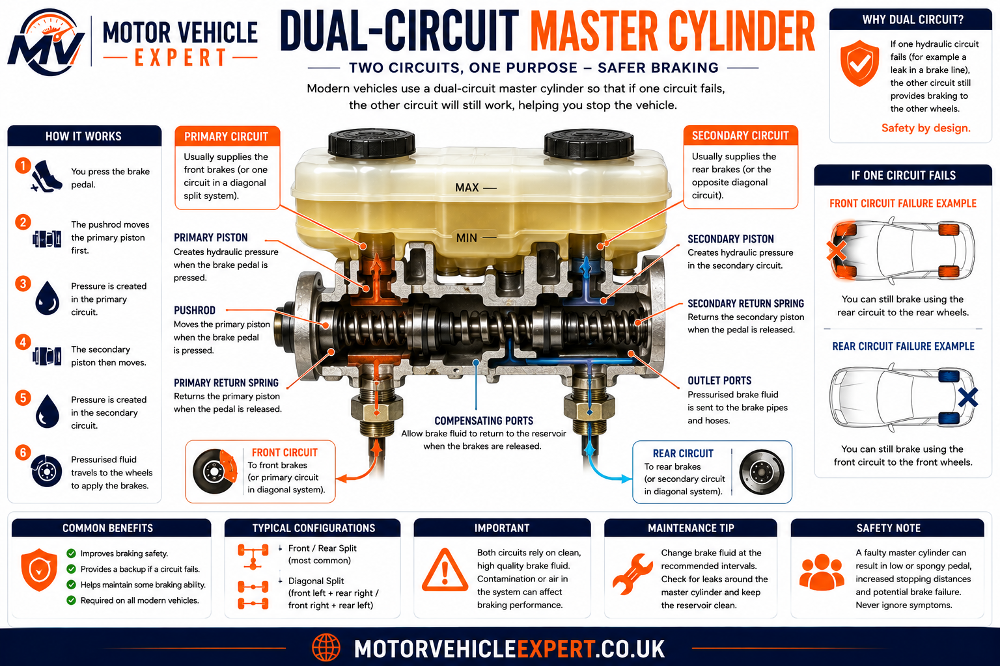
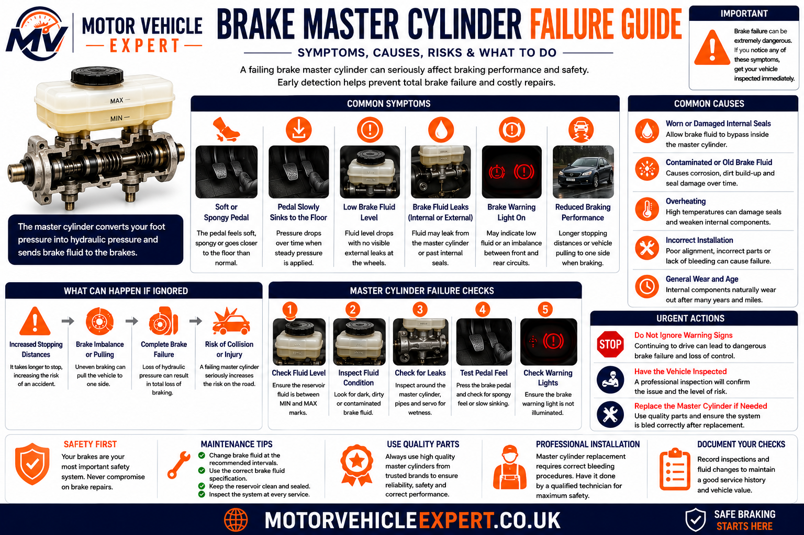
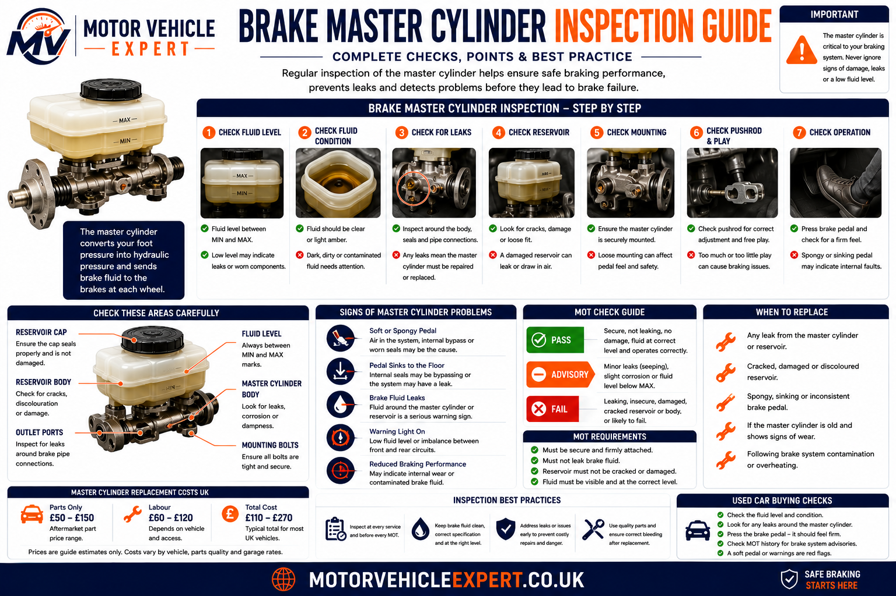

What is a brake master cylinder?
The brake master cylinder is the main hydraulic pump for the braking system. It sits between the brake pedal and the hydraulic brake circuits, usually mounted to the brake servo on the bulkhead. When the driver presses the brake pedal, the master cylinder pushes brake fluid through the brake pipes and brake hoses towards the brake calipers or rear wheel cylinders.
Without a working brake master cylinder, the braking system cannot reliably create hydraulic pressure. A worn internal seal, damaged bore, leaking reservoir seal or contaminated brake fluid can cause pressure loss, a sinking pedal, spongy braking or brake imbalance. Because the master cylinder feeds the rest of the braking system, faults here can affect the whole vehicle.
What does it do?
Converts brake pedal force into hydraulic pressure so the braking system can apply force at the wheels.
Where is it fitted?
Usually on the engine bay bulkhead, attached to the brake servo and connected to the brake fluid reservoir.
What is urgent?
A sinking pedal, fluid leak, soft pedal or pressure loss should be treated as a safety-critical braking fault.
Brake master cylinder faults are often confused with air in the brake fluid, leaking brake pipes, failing brake hoses or seized calipers. A proper diagnosis checks the full hydraulic system rather than replacing parts based on pedal feel alone.
What Is A Brake Master Cylinder?
A brake master cylinder is the component that starts the hydraulic braking process. It receives mechanical force from the brake pedal, usually assisted by the brake servo, and converts that force into hydraulic pressure inside the brake fluid. That pressure is then sent through the vehicle's rigid brake pipes and flexible brake hoses to operate the braking components at each wheel.
Most modern master cylinders are tandem designs, meaning two pistons operate inside one cylinder body. This allows the braking system to be split into two hydraulic circuits for safety. If one circuit suffers a leak or pressure loss, the second circuit can still provide partial braking performance, although the pedal will usually feel longer, softer or less responsive.
The master cylinder is usually mounted high in the engine bay on the bulkhead, directly in front of the driver. The brake fluid reservoir sits above it, supplying clean hydraulic fluid to the cylinder bore through small ports. Internal seals, springs, pistons and compensation ports must all work correctly for the system to build and release pressure safely.
Pedal Force
Driver pedal pressure moves the master cylinder pushrod and starts hydraulic pressure generation.
Brake Fluid
Brake fluid transfers pressure through the system because it is designed to resist compression.
Output Ports
Hydraulic pressure leaves the master cylinder through separate ports feeding different brake circuits.
Every hydraulic brake repair eventually depends on the master cylinder being able to create and hold pressure. If the master cylinder cannot seal internally, the rest of the braking system may appear serviceable but the pedal can still sink, feel soft or fail to build consistent pressure.
Brake Master Cylinder Diagram
The brake master cylinder contains several internal parts that work together every time the brake pedal is pressed. Understanding the reservoir, pistons, seals, springs and ports helps explain why faults can cause symptoms such as a sinking pedal, fluid loss, poor pressure build-up or brakes that do not release correctly.

The exact internal design varies between vehicles, but most modern master cylinders use a reservoir, tandem pistons, return springs, seals and separate hydraulic outlets for the brake circuits.
Reservoir
Stores brake fluid and keeps the master cylinder supplied as the system operates and brake pads wear.
Pistons
Move inside the cylinder bore to pressurise the brake fluid when the brake pedal is applied.
Internal Seals
Prevent pressure from bypassing the pistons and help the master cylinder hold hydraulic force.
Return Springs
Push the pistons back after braking so pressure is released and the brakes can disengage.
Compensation Ports
Allow fluid movement between the reservoir and cylinder bore as pressure rises and releases.
Outlet Ports
Send hydraulic pressure into the brake pipe circuits that feed the wheels.
A master cylinder can leak externally, but it can also fail internally without visible fluid loss. Internal seal bypass is one reason a brake pedal can slowly sink while the fluid level appears unchanged.
How The Brake Master Cylinder Works
When the brake pedal is pressed, the pedal movement is transferred through a pushrod into the brake master cylinder. The pushrod moves the primary piston inside the cylinder bore, which begins to pressurise the brake fluid. In a tandem master cylinder, the movement of the primary piston also acts on the secondary piston so both hydraulic circuits can build pressure.
Brake fluid does not compress like air, so pressure created in the master cylinder is transmitted through the brake pipes and brake hoses almost instantly. At the wheels, this pressure pushes caliper pistons outward so the brake pads clamp against the brake discs. When the driver releases the pedal, return springs move the pistons back and fluid pressure drops, allowing the brakes to release.
The master cylinder must also allow for heat expansion, pad wear and fluid return. Small internal ports help fluid move between the reservoir and cylinder bore when the brakes are released. If these ports become blocked or the piston does not return fully, brake pressure may not release correctly, potentially causing brake drag or overheating.
Step 1
Pedal AppliedThe brake pedal and servo push the master cylinder piston assembly forward.
Step 2
Pressure BuildsInternal seals trap brake fluid ahead of the pistons and hydraulic pressure rises.
Step 3
Brakes ApplyPressure travels to the calipers or wheel cylinders and applies braking force at the wheels.
Step 4
Pedal ReleasedReturn springs move the pistons back and pressure inside the brake circuits reduces.
Step 5
Fluid ReturnsCompensation ports allow fluid to return or rebalance as the system resets.
Step 6
System ReadyThe master cylinder returns to its rest position, ready for the next brake application.
Air compresses under pressure, but brake fluid is designed not to. If air enters the hydraulic system during a leak or repair, the pedal can feel soft or spongy even when the master cylinder itself is working correctly.
Dual-Circuit Brake Master Cylinder Explained
Modern vehicles use dual-circuit braking systems to reduce the risk of complete brake failure. Instead of one hydraulic circuit feeding all four wheels, the master cylinder separates braking pressure into two circuits. If one circuit fails because of a leak, damaged brake pipe, failed hose or other hydraulic fault, the second circuit can still provide partial braking.

Some vehicles split the circuits front-to-rear, while many modern passenger cars use a diagonal split so each circuit controls one front wheel and the opposite rear wheel.
Front / Rear Split
One circuit operates the front brakes and the other operates the rear brakes. This layout is simple but can create greater braking imbalance if one circuit fails.
Diagonal Split
One circuit operates a front wheel and the opposite rear wheel. This helps maintain more stable braking if one circuit loses pressure.
Primary Circuit
One section of the master cylinder feeds one hydraulic circuit through its own outlet port.
Secondary Circuit
The second piston section feeds the remaining circuit so braking is not completely dependent on one line.
Warning Signs
If one circuit fails, pedal travel may increase and braking may feel weak, uneven or unstable.
Dual-circuit braking improves safety, but it does not make the vehicle safe to keep driving with a hydraulic fault. If one circuit loses pressure, stopping distances increase and the vehicle should be recovered or inspected immediately.
Common Brake Master Cylinder Problems
Brake master cylinder problems usually develop gradually as seals wear, brake fluid absorbs moisture, internal bores corrode or external seals begin to leak. Because the master cylinder controls hydraulic pressure for the whole braking system, even a small internal fault can create symptoms that feel serious at the pedal.
Some faults are visible, such as brake fluid leaking around the reservoir or down the brake servo. Other faults are hidden inside the cylinder, where worn piston seals allow pressure to bypass internally. This is why master cylinder diagnosis must always consider the complete hydraulic system, including the brake fluid, brake pipes, brake hoses and calipers.
Internal Seal Wear
Worn seals allow brake fluid pressure to bypass the piston internally, often causing the brake pedal to slowly sink.
External Fluid Leak
Leaks around the rear seal, reservoir grommets or outlet ports reduce fluid level and can introduce air into the system.
Contaminated Brake Fluid
Old or contaminated fluid can damage rubber seals and encourage internal corrosion inside the master cylinder bore.
Blocked Compensation Port
A blocked port can prevent pressure from releasing correctly, causing brakes to drag, overheat or remain partly applied.
Worn Cylinder Bore
Corrosion or scoring inside the bore prevents seals from holding pressure reliably, especially during steady pedal pressure.
Incorrect Bleeding
Air trapped after replacement or repair can mimic master cylinder failure and cause a long, spongy brake pedal.
A soft or sinking pedal does not automatically prove the brake master cylinder has failed. Leaking brake pipes, flexible brake hoses, caliper seals, ABS hydraulic units and air in the system can produce similar symptoms. Always diagnose the complete hydraulic circuit before replacing the master cylinder.
Brake Master Cylinder Failure Guide
Brake master cylinder failure can be external, internal or hydraulic. External failure usually leaves visible brake fluid around the reservoir, cylinder body, outlet ports or brake servo. Internal failure may leave no visible leak at all, but the pedal can slowly sink because pressure bypasses worn piston seals inside the cylinder.

Master cylinder faults should always be treated seriously because the component feeds pressure to the entire braking system. If hydraulic pressure cannot be generated or held correctly, the braking system may feel inconsistent, the pedal may travel further than normal or stopping distances may increase.
Sinking Brake Pedal
The pedal slowly drops while held under steady pressure, often indicating internal seal bypass.
Soft Or Spongy Pedal
Air, fluid contamination or master cylinder wear can reduce pedal firmness and braking response.
Visible Fluid Leak
Brake fluid around the master cylinder, servo, reservoir or pipes requires immediate inspection.
Brake Warning Light
A low brake fluid warning may appear if the reservoir level drops due to leaks or pad wear.
Uneven Braking
If one circuit loses pressure, braking may feel unstable, weak or uneven across the vehicle.
Brake Drag
A blocked compensation port or incorrect pushrod adjustment can prevent pressure from releasing fully.
Do not continue driving a vehicle with a sinking brake pedal, visible brake fluid leak or suspected hydraulic pressure loss. The vehicle should be inspected immediately because braking performance may deteriorate without warning.
A master cylinder can pass a quick visual inspection and still be faulty internally. Holding firm pressure on the brake pedal during a controlled workshop test can help reveal internal bypass if the pedal slowly sinks.
Brake Master Cylinder Inspection Guide
A proper brake master cylinder inspection checks both visible condition and hydraulic performance. Technicians look for brake fluid leaks, reservoir cracks, contaminated fluid, damaged pipes, poor pedal feel, warning lights and signs that the master cylinder is not holding pressure correctly.

Because braking systems are safety-critical, master cylinder diagnosis should not rely on one symptom alone. A garage will normally inspect the complete hydraulic system, check for leaks at every wheel, examine the brake pipes and hoses, test the brake pedal and confirm whether the fault is caused by the master cylinder or another braking component.
Fluid Level
Low brake fluid may indicate worn pads, a leak or a hydraulic fault that needs investigation.
Fluid Condition
Dark, dirty or moisture-contaminated fluid can damage internal seals and reduce braking performance.
External Leaks
Brake fluid around the reservoir, master cylinder body, outlet ports or servo must be repaired.
Pedal Hold Test
A pedal that slowly sinks under steady pressure may suggest internal seal bypass.
Pipe Connections
Hydraulic pipe unions are checked for corrosion, seepage, damage or cross-threading.
Full System Check
Calipers, hoses, pipes and ABS components are inspected to rule out other pressure-loss causes.
If the master cylinder is replaced, the braking system should be correctly bled and road-tested before the vehicle returns to use. Some ABS-equipped vehicles may require diagnostic equipment to complete the bleeding process correctly.
Can A Brake Master Cylinder Be Repaired Or Must It Be Replaced?
Whether a brake master cylinder can be repaired depends on the vehicle design, the type of fault and the condition of the internal cylinder bore. Older vehicles sometimes used rebuildable master cylinders with seal kits, but many modern vehicles are normally repaired by fitting a complete replacement unit. This is because internal wear, corrosion, scoring or contamination can make a seal-only repair unreliable.
A master cylinder rebuild usually involves removing the unit, stripping it, cleaning the bore, replacing seals and carefully reassembling the piston assembly. This may sound straightforward, but the cylinder bore must be smooth, correctly sized and free from corrosion. If the bore is pitted, scored or worn, new seals may fail quickly because they cannot maintain even hydraulic pressure.
On most everyday UK vehicles, replacement is usually the safer and more cost-effective repair. A complete new or quality remanufactured master cylinder reduces the risk of repeat failure and avoids relying on old internal surfaces. Because braking systems are safety-critical, workshops generally prefer a repair method that gives predictable pressure, correct pedal feel and reliable long-term sealing.
Replacement also gives the technician an opportunity to inspect the brake servo mounting area, reservoir seals, brake pipe unions and surrounding hydraulic components. If brake fluid has leaked into or around the servo, the servo may also require inspection because brake fluid can damage internal rubber components and protective coatings.
After a master cylinder is replaced, the braking system must be bled correctly to remove air. Some vehicles require bench bleeding before installation, while ABS-equipped vehicles may need diagnostic equipment to cycle the ABS hydraulic unit. If bleeding is incomplete, the pedal may remain soft even though the new master cylinder is working correctly.
Repair May Be Considered If...
- ✓The vehicle uses a rebuildable master cylinder design.
- ✓The bore is clean, smooth and within specification.
- ✓A correct-quality seal kit is available.
- ✓The work is carried out by a competent technician.
Replacement Is Safer If...
- ✓The cylinder bore is scored, pitted or corroded.
- ✓The pedal sinks because of internal pressure bypass.
- ✓The reservoir seals or outlet ports are leaking.
- ✓The vehicle uses a modern non-serviceable unit.
OEM Replacement
Original equipment parts usually provide the closest match for pressure output, fittings and pedal feel.
Quality Aftermarket
A reputable aftermarket master cylinder can be suitable if it matches the correct vehicle specification.
Used Parts
Used master cylinders are difficult to verify internally and are generally not recommended for safety-critical repairs.
For most modern vehicles, replacing a faulty brake master cylinder is safer than attempting a temporary or partial repair. The replacement should always be followed by correct brake bleeding, leak checks and a controlled road test before the vehicle returns to normal use.
Brake Master Cylinder And The UK MOT Test
The brake master cylinder is not assessed in isolation during the MOT test, but it forms part of the vehicle's overall braking system inspection. MOT testers check braking performance, brake fluid leaks, visible hydraulic components, brake pedal condition, warning lights and whether the braking system operates safely. A master cylinder fault can therefore contribute directly to an MOT failure.
If the master cylinder leaks externally, cannot maintain pressure, causes excessive pedal travel or contributes to poor braking efficiency, the vehicle may fail the MOT. Brake fluid leaking from the master cylinder, reservoir, pipe unions or servo area is especially serious because fluid loss can reduce hydraulic braking pressure and create a safety defect.
A weak master cylinder can also show up during the roller brake test as reduced braking efficiency or imbalance between wheels. However, MOT testing does not always identify early internal seal bypass, so a vehicle can sometimes pass an MOT while still showing early symptoms such as a slowly sinking pedal under steady pressure.
Pass
No visible leaks, brake pedal feels secure, fluid level is correct and braking performance meets MOT requirements.
Advisory
Minor seepage, low fluid requiring monitoring or early deterioration may be noted if immediate failure is not present.
Fail
Brake fluid leaks, excessive pedal travel, poor braking efficiency or obvious hydraulic defects can cause MOT failure.
Do not wait for the MOT if the brake pedal sinks, feels unusually soft or the brake fluid level drops. A master cylinder problem is a safety issue first and an MOT issue second.
Brake Master Cylinder Replacement Costs UK
Brake master cylinder replacement costs vary depending on the vehicle, parts quality, labour time, access, brake fluid bleeding requirements and whether the hydraulic system has additional complications such as seized pipe unions or ABS bleeding procedures. Some vehicles allow straightforward access, while others require removal of surrounding components.
The prices below are broad UK guide estimates only. The final cost depends on your vehicle, local labour rates, whether OEM or aftermarket parts are used and whether additional braking faults are found during inspection.
Budget / Small Cars
£180–£280Smaller vehicles often use lower-cost parts and may be quicker to bleed after replacement.
Family Cars & SUVs
£250–£450Larger vehicles may use more expensive master cylinders and require additional labour time.
Premium Vehicles
£400–£800+Premium, hybrid, electric and performance vehicles may require specialist parts or diagnostic bleeding procedures.
Brake Fluid & Bleeding
£60–£140Replacing the master cylinder normally requires brake fluid bleeding and sometimes a complete fluid change.
Seized Pipe Unions
£60–£200+Corroded pipe unions can increase labour time and may require brake pipe repair or replacement.
ABS Bleeding Procedure
£80–£180+Some ABS-equipped vehicles require scan tool procedures to remove trapped air from the hydraulic unit.
If a garage recommends a brake master cylinder, ask what test confirmed the fault. A sinking pedal, visible leak, internal pressure bypass or contaminated fluid history provides stronger evidence than pedal feel alone.
Replacing old brake fluid on schedule helps protect the master cylinder seals and internal bore. Preventative brake fluid changes are far cheaper than replacing hydraulic components damaged by moisture-contaminated fluid.
Checking The Brake Master Cylinder Before Buying A Used Car
The brake master cylinder is not always easy to inspect during a used car viewing, but several warning signs can reveal hydraulic problems before you buy. Because the master cylinder feeds the whole braking system, symptoms such as a sinking pedal, low brake fluid, fluid staining around the servo or poor braking response should be treated seriously.
A used vehicle with master cylinder problems may also have related faults elsewhere in the hydraulic system. Old brake fluid, corroded brake pipes, leaking brake hoses, sticking calipers or poor previous repairs can all place extra strain on the braking system. Always check the master cylinder alongside the full brake service history and MOT history.
Brake Fluid Level
Low fluid may indicate worn brake pads, a leak or neglected maintenance. Do not assume topping up solves the problem.
Fluid Staining
Dampness around the reservoir, master cylinder body or servo area may indicate external brake fluid leakage.
Brake Pedal Feel
A pedal that sinks, feels spongy or travels too far should be investigated before purchase.
MOT History
Repeated brake fluid, hydraulic leak, brake pipe or braking efficiency advisories may suggest deeper system neglect.
Service Records
Look for evidence of regular brake fluid changes, brake repairs and professional hydraulic inspections.
Warning Lights
Brake, ABS or low-fluid warning lights should always be diagnosed before buying the vehicle.
A faulty brake master cylinder is not just a repair-cost issue. It can point to wider hydraulic system neglect. If the brake pedal feel is poor or fluid leaks are visible, negotiate only after a professional brake inspection or walk away from the vehicle.
Brake Master Cylinder FAQs
What does a brake master cylinder do?
The brake master cylinder converts force from the brake pedal into hydraulic pressure. This pressure moves brake fluid through the brake pipes and brake hoses to operate the brake calipers or wheel cylinders.
What are the symptoms of a failing brake master cylinder?
Common symptoms include a sinking brake pedal, soft or spongy pedal feel, visible brake fluid leaks, reduced braking performance, uneven braking, warning lights or brake fluid loss without an obvious wheel leak.
Can a brake master cylinder fail an MOT?
Yes. A leaking, insecure or faulty brake master cylinder can contribute to an MOT failure if it affects braking performance, causes fluid loss or creates a safety defect.
Can a brake master cylinder be repaired?
Some older master cylinders can be rebuilt using seal kits, but replacement is normally the safer and more reliable option on modern vehicles, especially if the internal bore is worn, scored or corroded.
How much does brake master cylinder replacement cost in the UK?
Typical UK brake master cylinder replacement costs range from around £180 to £450 for many vehicles. Premium vehicles, ABS bleeding procedures, seized pipe unions or extra brake fluid work can increase the final cost.
Is it safe to drive with a faulty brake master cylinder?
No. A suspected brake master cylinder fault should be inspected immediately because it can reduce hydraulic brake pressure, increase stopping distances and make braking inconsistent.
Related Brake Guides
Learn more about the complete hydraulic braking system with our detailed UK guides covering each major brake component.
Disc Brakes Explained
Complete guide covering the full modern disc braking system.
Brake Pads Explained
Learn how brake pads create friction and wear over time.
Brake Discs Explained
Understand brake disc wear, heat control and replacement.
Brake Calipers Explained
How calipers convert hydraulic pressure into clamping force.
Brake Fluid Explained
Why clean brake fluid is essential for hydraulic braking.
Brake Pipes Explained
Learn how rigid brake pipes carry pressure around the vehicle.
Brake Hoses Explained
Understand the flexible hydraulic hoses fitted at each wheel.
Brake Servo Explained
Understand brake assistance and vacuum servo operation.
Car Fails MOT On Brakes
Brake-related MOT failures, safety defects and repair priorities.
Final Thoughts
The brake master cylinder is one of the most important hydraulic components on any vehicle. It may not be as visible as the brake pads, discs or calipers, but every braking action depends on it creating and controlling hydraulic pressure correctly.
Symptoms such as a sinking pedal, soft pedal, visible fluid leaks or inconsistent braking should never be ignored. Because similar symptoms can be caused by air in the system, brake pipe leaks, brake hose faults or caliper problems, correct diagnosis is essential before parts are replaced.
Regular brake fluid changes, careful inspections and professional repair work help protect the master cylinder and the rest of the hydraulic braking system. If a master cylinder fault is confirmed, replacement with the correct-quality part and proper brake bleeding is the safest long-term repair.
A healthy brake master cylinder is essential for reliable hydraulic pressure. If the pedal sinks, fluid leaks or braking performance changes, treat it as a safety-critical fault and arrange a professional inspection.
About This Brake Master Cylinder Guide
This guide forms part of the Motor Vehicle Expert braking system knowledge base. It has been written to help UK drivers understand hydraulic braking components, common failure symptoms, inspection methods, MOT relevance, repair costs and used car buying risks using practical workshop knowledge and manufacturer-style servicing principles.
The information is provided for educational purposes and should not replace a professional inspection where a braking fault is suspected. Brake master cylinder problems can affect vehicle safety, so leaks, pressure loss, warning lights or poor pedal feel should always be checked by a qualified technician.
As the Motor Vehicle Expert braking knowledge cluster continues to expand, this guide will be reviewed and updated with additional UK repair guidance, braking system explanations and maintenance information.